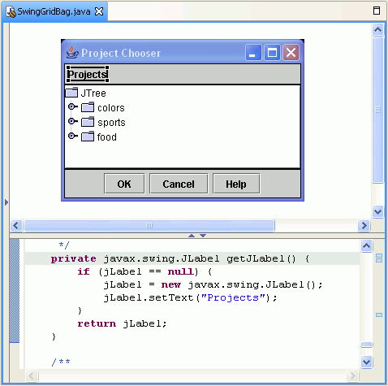

The visual editor for Java editor is divided into two windows: the Design view previews the Java beans in a graphical representation, and the Source view shows the associated Java code.
Visual beans that are Swing, SWT, or AWT components, or subclasses of these components, are shown in the Design view with their graphical representation. As you modify the Java beans in the Design view, the source is updated. Conversely, as you change the source files, the Design view is updated to reflect the changes you make. This round tripping of the Design and Source views is designed so that the visual editor for Java can be used not only as a tool to generate code, but as an editor to show the effect of source code modifications during development. After you make changes to your .java file source in another editor, your changes will be reflected in the design window of the visual editor.
The visual editor for Java, by default, shows the Design view above the Source view on a split pane. The Design view is a WYSIWYG surface, or canvas, where you can compose the GUI that you are building. The Source view shows the contents of the Java file. The collapsible palette is on the left, where you can select components to add to the design.

You can change the default so that the Design and Source views are notebook tabs, allowing you to click back and forth between them. To change the default, click . Select the Appearance tab, then click On Separate notebook tabs. Close the visual editor for Java, then open it again to refresh your preference change.
Parent topic: About the visual editor for Java
Related tasks
Directly editing items in the Design view